HTML и CSS: использую flexbox и grid, transition и animation, использую относительные единицы измерения там, где это возможно, придерживаюсь семантического написания с минимумом div-ов и span-ов, обеспечивая хорошо читаемый доступ к элементам через комбинированные селекторы. Вместе с тем осознаю и могу поддерживать проекты, построенные в соответствии с БЭМ, а также верстать макеты в концепции Pixel Perfect.
Приветствую!
Меня зовут Игорь Грабеклис
и это портфолио моих работ
Ниже вы можете с ними ознакомиться
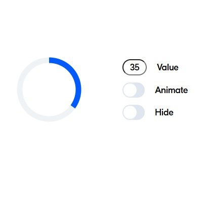
ProgressBarAPI
Индикатор выполнения с функциями анимации и скрытия, созданный строго как reusable component. Предоставляет собственный API. Создан как тестовое задание для одной узнаваемой по стилю компании
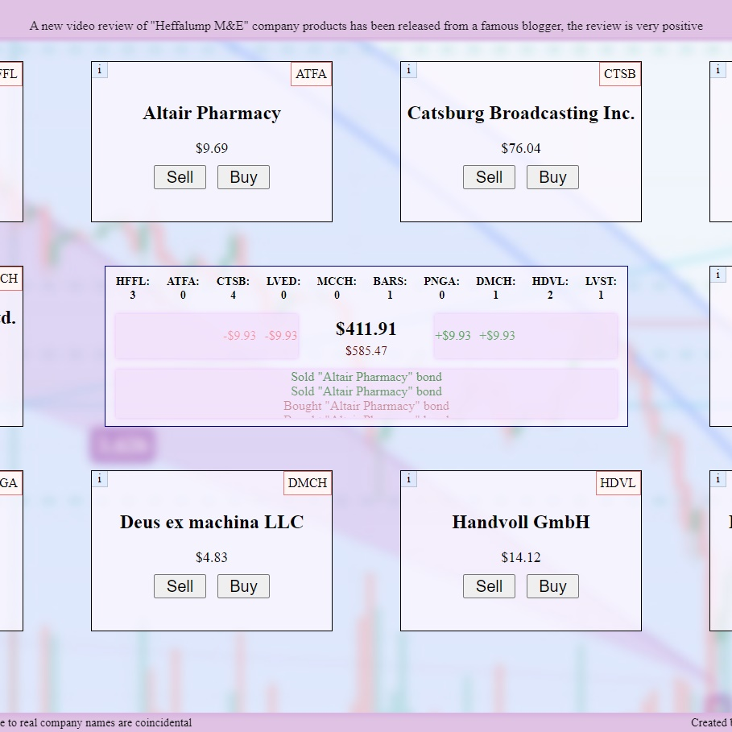
Stonks: биржа-песочница
Мой магнум опус пет-проект - браузерная игра биржевого вида, написанная на максимально чистом бразуерном JS: логика, анимации, весь DOM
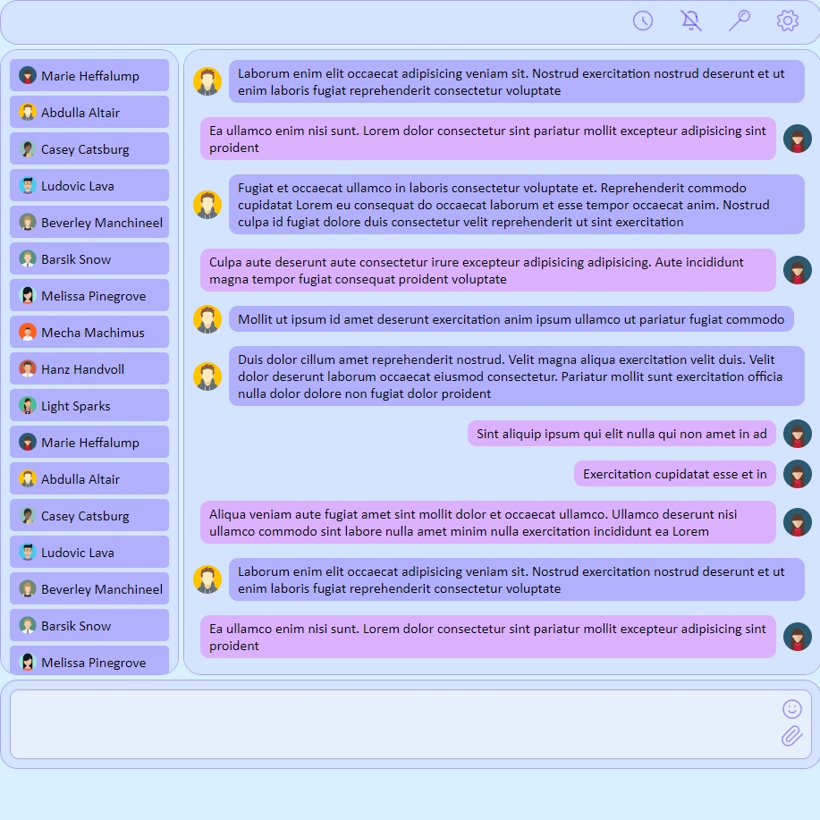
Чат-интерфейс
Вёрстка интерфейса чата - адаптивная, кроссбраузерная, валидная, на чистых HTML и CSS
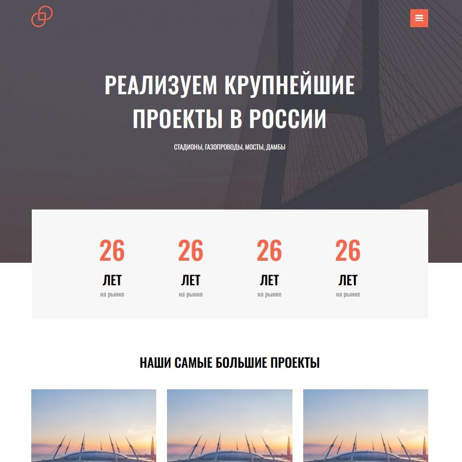
Лендинг
Вёрстка по макету в Figma с соблюдением методики БЭМ и принципов Pixel Perfect
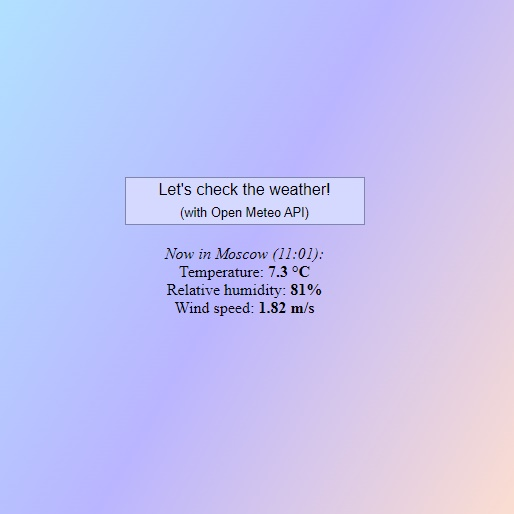
Приложение "Погода в Москве прямо сейчас"
Крохотное приложение-кнопка, получающая информацию о текущей погоде в Москве в помощью Open Meteo API. Создавалось для отработки async, работы с API и query-параметрами
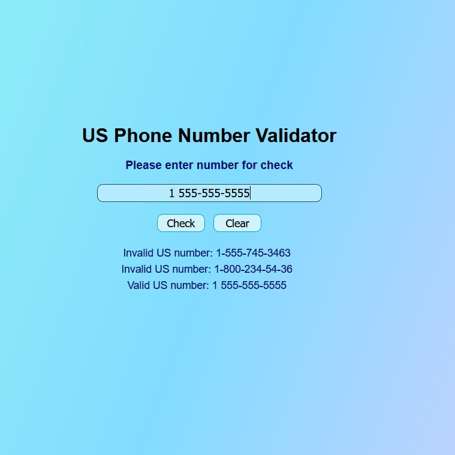
Проверщик валидности номера телефона
Проверяет введённый номер на соответствие формату телефонных номеров США (1-XXX-XXX-XXXX). Написано для отработки JS
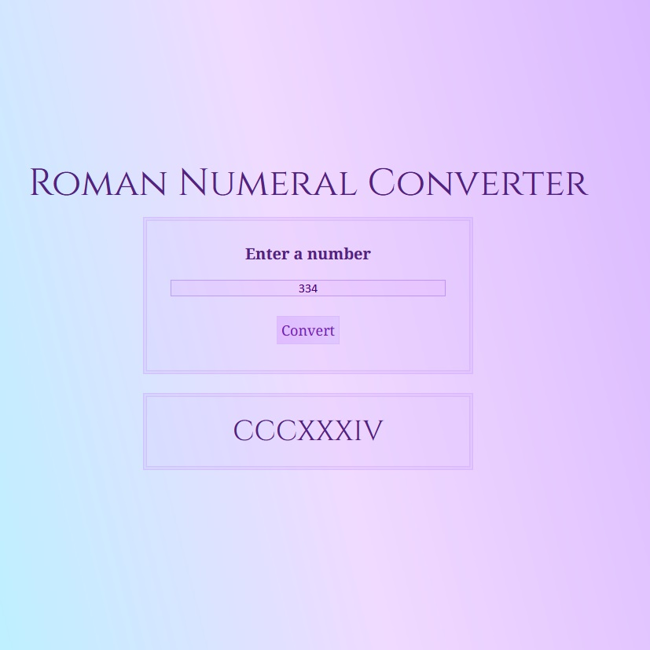
Конвертер римских чисел
Преобразует арабские числа до 3999 включительно в римские. Написано для отработки JS
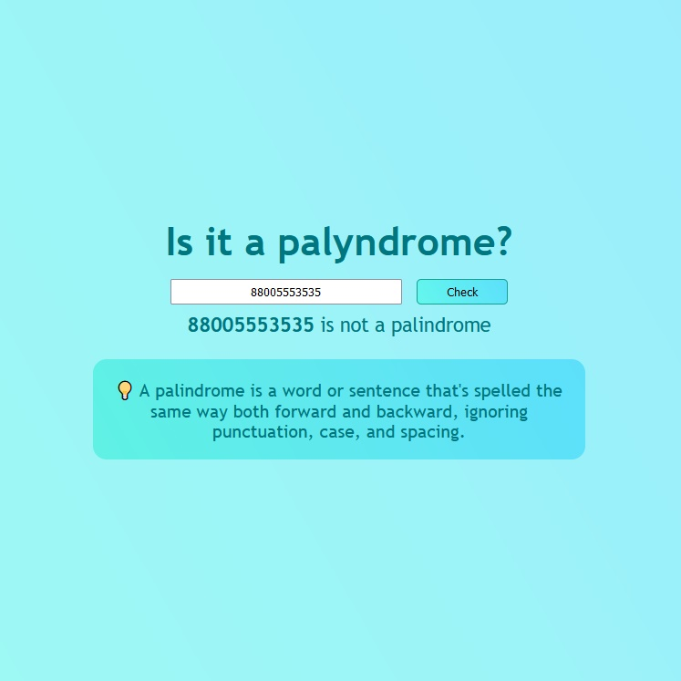
Проверщик палиндромов
Маленькое приложение для проверки, является ли введённое выражение палиндромом. Написано для отработки JS
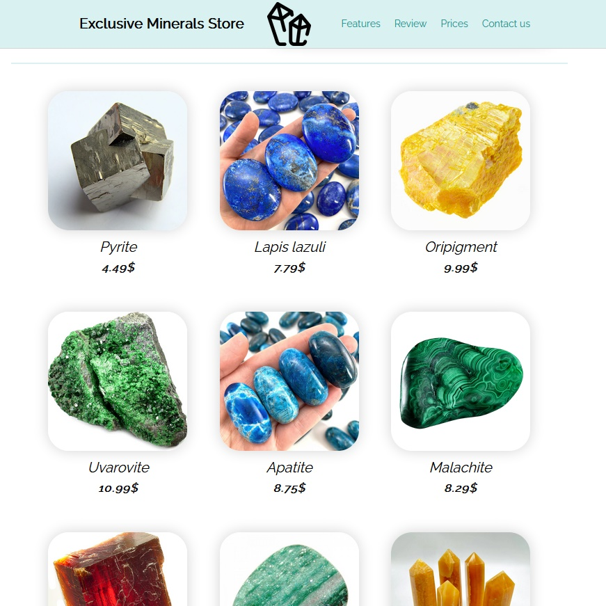
Интернет-магазин
Вёрстка страницы интернет-магазина выдуманной компании "Exclusive Minerals Store"
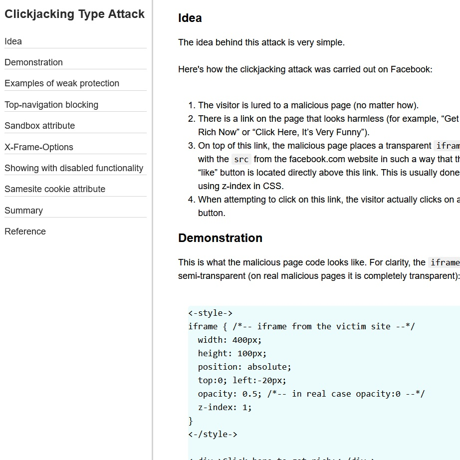
Техническая документация
Статья для ознакомления с одним из известных способов взлома страниц, основанной на перехвате пользовательского клика
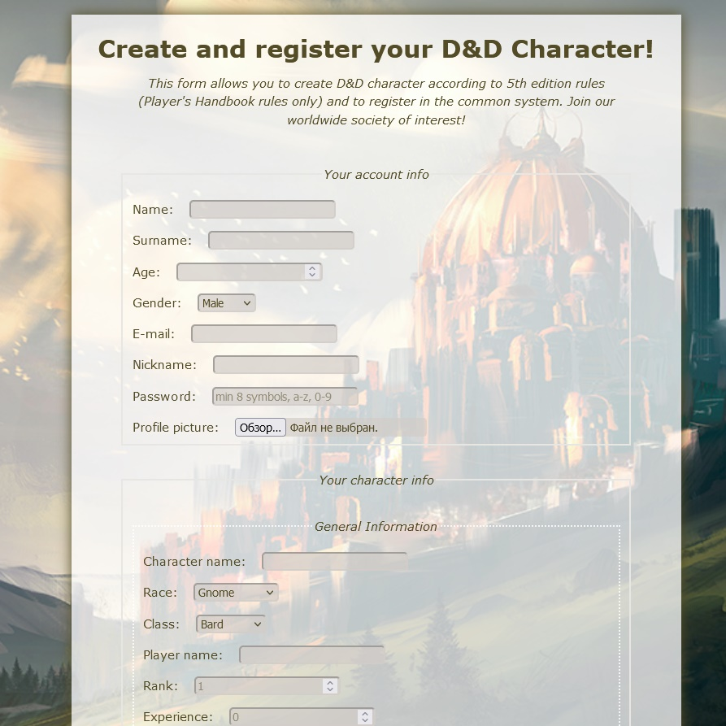
Страница регистрации
Форма создания персонажа для Dungeons and Dragons в цифровом представлении
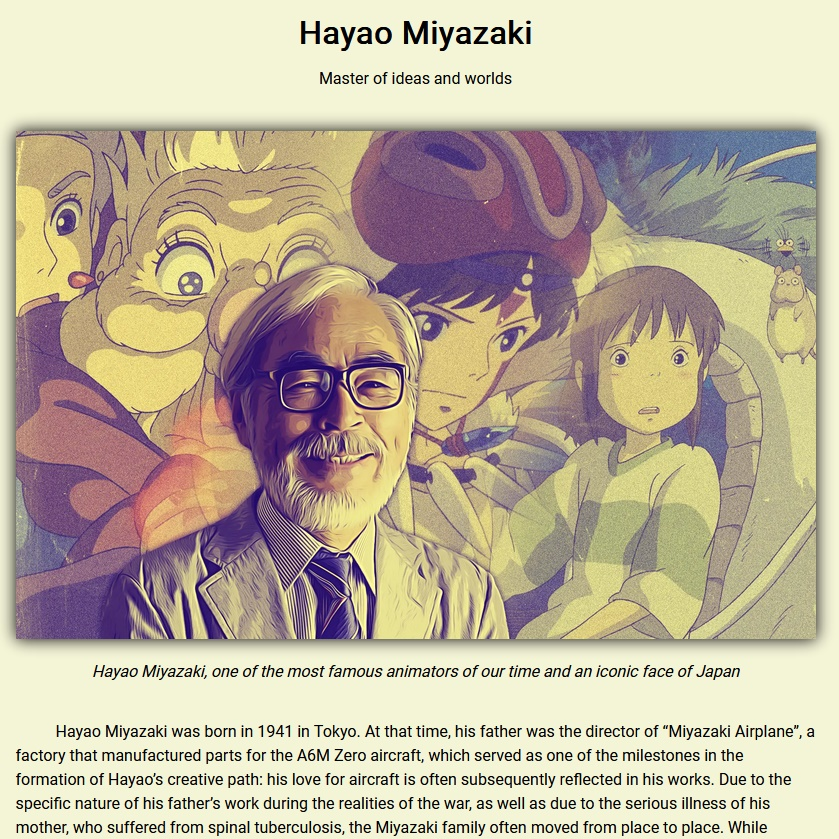
Биографическая статья
Трибьют-страница, посвящённая Хаяо Миядзаки
Обо мне
Навыки
JavaScript: понимаю концепции наследования, контекста, области видимости, замыканий, рекурсии, асинхронности. Владею браузерным JS - могу построить весь документ динамически из скрипта, написать анимацию на JS, отлавливать все события и ошибки. Имею базовые представления о клиент-серверном взаимодействии, работе с API.
TypeScript:знаком с синтаксисом и специфичными для TS структурами данных, умею работать с модификаторами, аксессорами, статическими свойствами и методами, понимаю тонкости наследования в классах/интерфейсах, знаком с абстрактными классами/методами, расширением интерфейсов, дженериками.
React: создание функциональных компонентов, поддержка классовых, реактивная работа со структурами данных, хуки, кастомные хуки, декомпозиция, построение SPA через React Router.
Git: владею основами для локальной и совместной работы - ветвление, слияние, разрешение конфликтов, изменение истории, работа с удалёнными репозиториями. Работаю с гитом в консоли, для решения простых повседневных задач типа commit -> push в основном использую интегрированный в IDE интерфейс.
Инструменты и подходы
VSCode
Sublime Text
ESLint
Regex
Git Bash
Github
prettier
minify
npm
axios
nanoid
react-uuid
styled-components
React Router
Адаптивная вёрстка
Семантическая вёрстка
Валидная вёрстка
Figma
Photoshop
Pixel Perfect
Caniuse
БЭМ
Источники знаний
- Современный учебник JavaScript
- Курсы freeCodeCamp
- MDN Web Docs
- Учебник code.mu
- Проект Дока
- Документация React
- Видеокурсы на Youtube
- Платформа-тренажёр Codewars
- Пет-проекты
Подробнее
Бэкграунд и цели
Я учёный. Из тех, что снуют по лабораториям в белых халатах, работают с пробирками и приборами, проводят эксперименты и пишут научные статьи. По образованию – радиоэколог-экотоксиколог с факультета почвоведения МГУ. Мой основной рабочий опыт связан с аналитической химией и медициной.
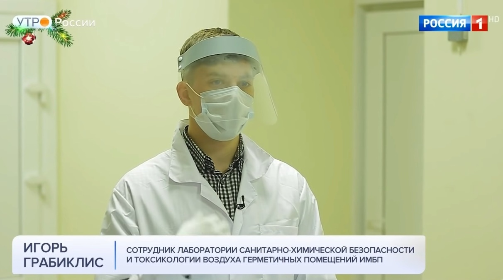Вместе с тем, некоторая часть моей души всегда тяготела к технике и точным наукам. В юности я собирал и разбирал компьютеры и электронику, что попадалась под руку, сочинял себе развлечения вроде вертолёта из кулера и электродвигателя с батарейкой, ходил в кружок радиотехники.
В средней школе сделал свою первую HTML-страничку, игрался с фотошопом, будучи постарше начал углубляться в нетривиальное использование ПК – писал простенькие макросы для Word и Excel, находил и редактировал .cfg и .ini файлы в программах, графический интерфейс которых не подразумевал прямого к ним доступа, выковыривал из реестра Windows назойливые штуки вроде браузера Амиго, путешествовал по голому hex-коду, дизассемблированному в Cheat Engine, в поисках способа ускорить компьютерную игру, ставил древний Windows XP на древний BIOS (это сейчас винду поставить – раз плюнуть, раньше целое приключение было), даже до железа доходил и занимался оверклокингом.
В университетские годы особую любовь начал испытывать к работе с данными, особенно в душу мне запала матстатистика, которую в последующем я использовал практически везде, где это было приемлемо – благо, наука к этому зачастую располагает. Во время учёбы и работы осваивал программы для статобработки, дошло даже до использования языка R и изучения Python в ковидные каникулы с целью сменить основное поле деятельности на анализ данных (хорошо это или плохо, каникулы оказались недолгими).
Вся моя жизнь идёт бок о бок с компьютерами, и одним из интересующих направлений развития для меня всегда было связывание с компьютерами своей профессиональной деятельности – как видно из предыдущего жизненного опыта, многое к этому стремилось. Сейчас для меня сложилось сочетание желаний и возможностей изменить жизнь в этом направлении, и путь в мир компьютерных наук я решил начать с web-разработки, благодаря чему вы сейчас находитесь на этом сайте и читаете этот текст. Я освоил HTML, CSS, JS и React, и мои дальнейшие планы на обозримое будущее – использование полученных навыков в реальной жизни и изучение Node.js для углубления в бэкенд и возможности стать fullstack-разработчиком.
Образование и сертификаты
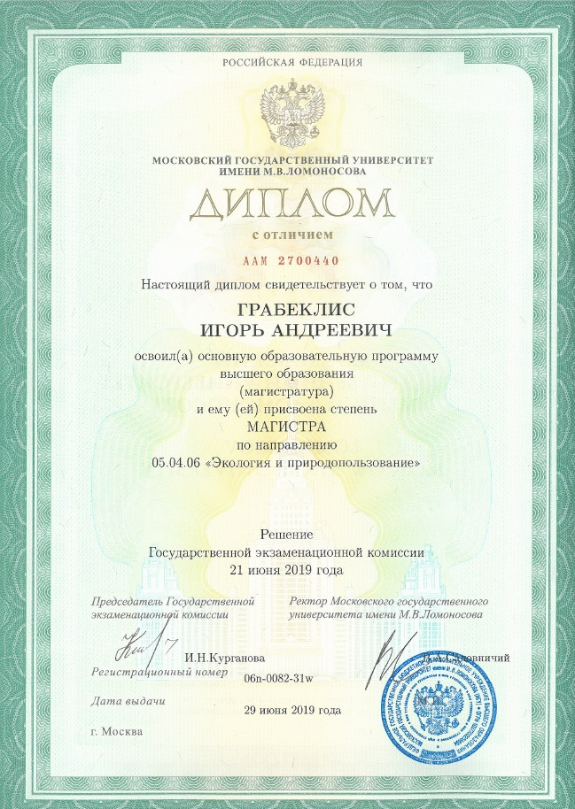
МГУ, факультет почвоведения, направление "Экология и природопользование", магистр
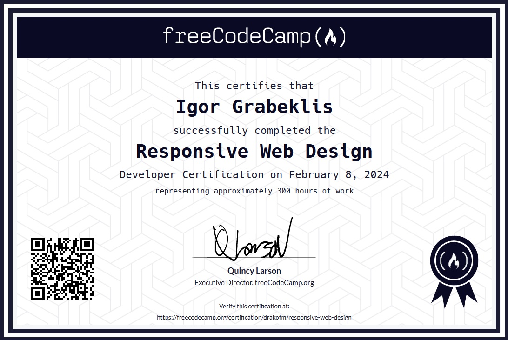
FreeCodeCamp - Responsive Web Design Cetrification
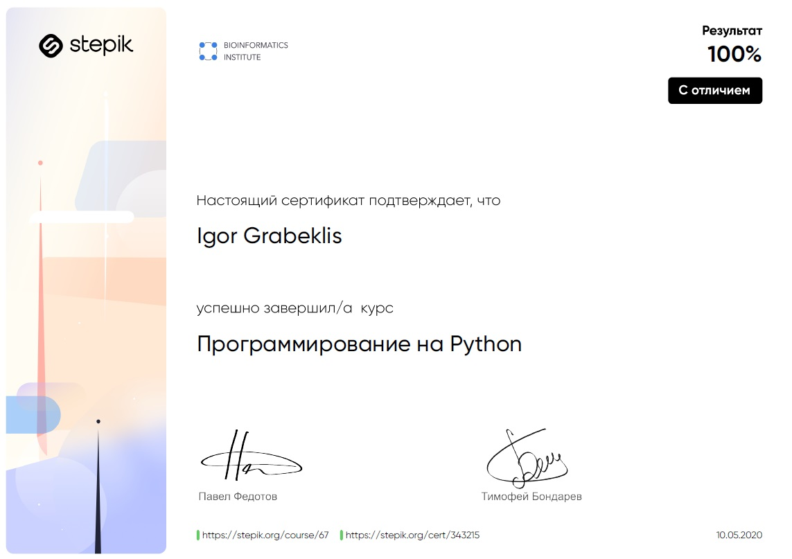
Stepik - Программирование на Python
Опыт работы
Сентябрь 2021 — Ноябрь 2023
ГНЦ РФ - ИМБП РАН
Научный сотрудник
Ноябрь 2020 — Январь 2021
АНО ЦБМ
Химик-исследователь
Октябрь 2018 — Сентябрь 2020
ГК РЭИ
Инженер (аналитическая химия)
Май 2017 — Сентябрь 2018
РУДН
Лаборант
Я открыт всем деловым предложениям и буду рад принять участие в вашей работе